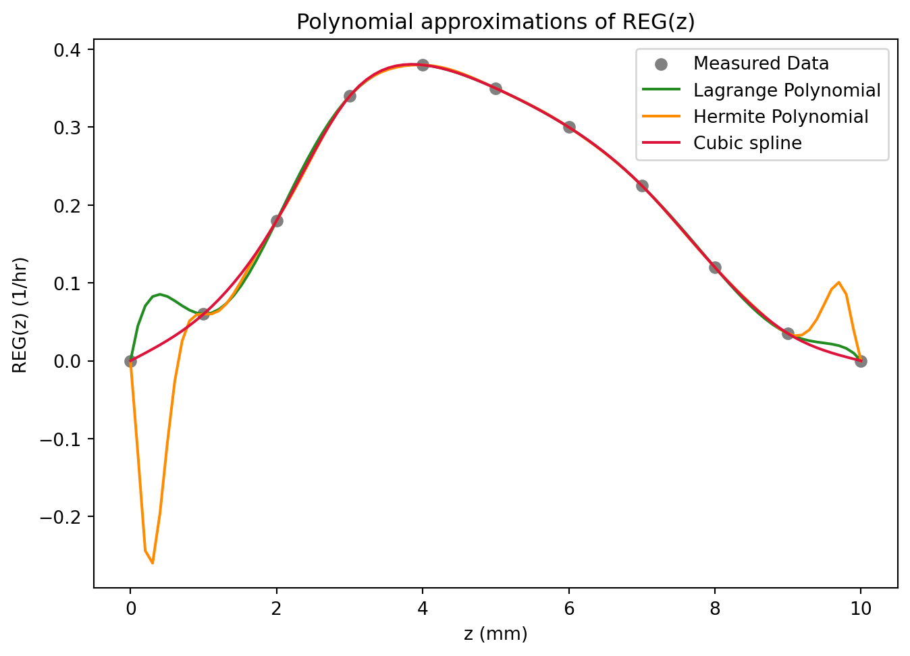
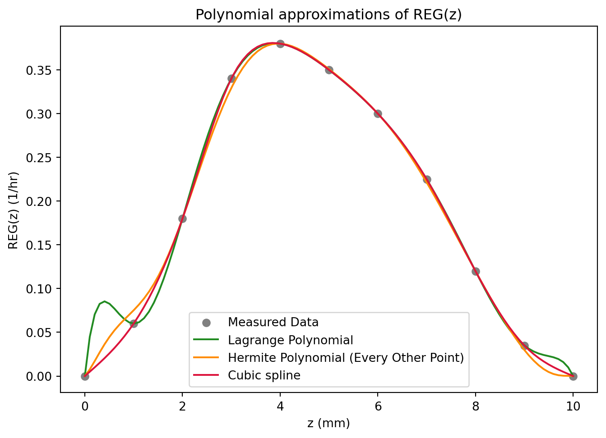
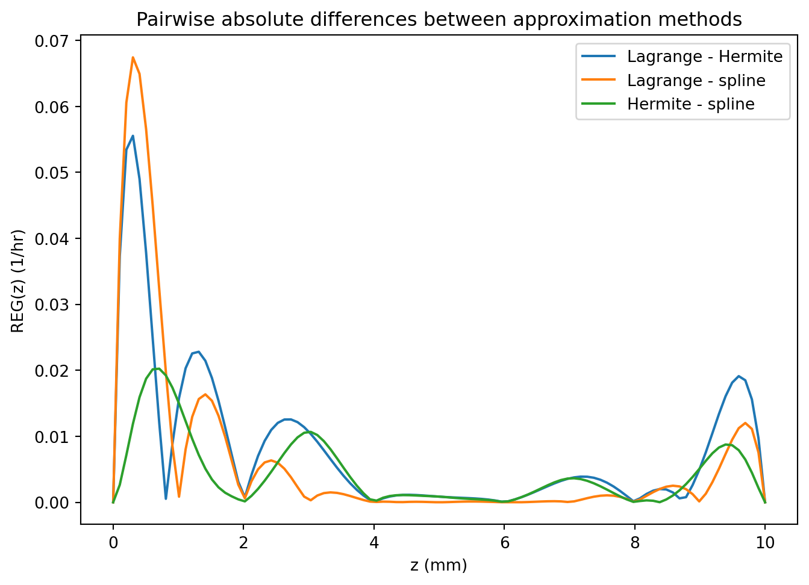
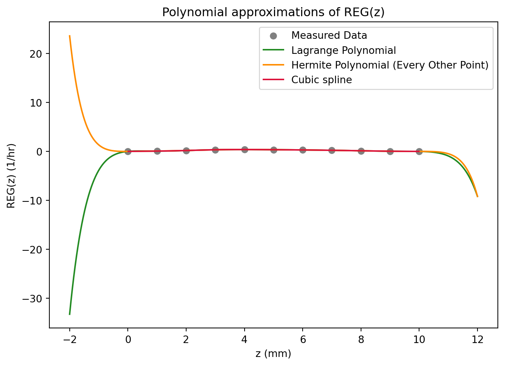

# package imports
import numpy as np
import sympy as sp
import matplotlib.pyplot as pltProject 7
Introduction
Interpolation methods, also known as interpolants, are methods of approximating a continuous function \(f(x)\) from a limited set of known \((x, f(x))\) values. \(g(x)\), an approximation of \(f(x)\), is said to interpolate the point \((a, b)\) if \(f(a)=b=g(a)\) and the information \(f(a)=b\) is used when creating \(g(x)\). Interpolation methods are useful for approximating the value of the unknown \(f(x)\) between limited known/measured values of \(f(x)\). However, their estimates tend to quickly become inaccurate when moving away from known values, even more so when moving outside the interval containing all known values.
For this project - estimating the growth rate of corn roots at points a certain distance from the kernel - we will attempt three different interpolating methods: a Lagrange polynomial, a Hermite polynomial, and a cubic spline. After constructing each approximation, we will evaluate their performance compared to one another and select the best method for approximating \(REG(z)\) on \([0,10]\).
Analysis
We will begin with a by-hand construction of each type of polynomial for a smaller subset of the provided data. Note that, since we do not know the actual function \(REG(z)\), the numeric derivatives of the example points were approximated using a Python tool implemented in the Computer Program section of this project.
| z | REG(z) | REG’(z) |
|---|---|---|
| 0 | 0 | 0.05833 |
| 5 | 0.35 | -0.04375 |
| 10 | 0 | -0.005 |
Lagrange Polynomials
A Lagrange polynomial is a unique polynomial of lowest degree that interpolates a particular set of points. If it interpolates \(n+1\) points, then it has degree of at most \(n\). A Lagrange polynomial is given by:
\[P(x) = \sum_{i=0}^{n} f(x_i) \prod_{\substack{j=0 \\ j \neq i}}^{n} \frac{x - x_j}{x_i - x_j}\]
For our example construction, our Lagrange polynomial will have at most degree 2 since it will interpolate 3 points. We can construct \(L_2(z)\) directly using the above formula:
\(L_2(z) = 0\frac{(z-5)(z-10)}{(0-5)(0-10)} + 0.35\frac{(z-0)(z-10)}{(5-0)(5-10)} + 0\frac{(z-0)(z-5)}{(10-0)(10-5)}\)
\(L_2(z) = 0.35\frac{(z-0)(z-10)}{(5-0)(5-10)}\)
\(L_2(z) = 0.35\frac{(z-0)(z-10)}{-25}\)
Interpolation
We can verify that \(L_2(z)\) interpolates the 3 points used to construct it by checking that \(L_2(z) = REG(z)\) for \(z=0, 5, 10\):
For \(z=0\):
\(L_2(0) = 0.35\frac{(0)(-10)}{-25} = 0 = REG(0)\)
For \(z=5\):
\(L_2(5) = 0.35\frac{(5)(-5)}{-25} = 0.35*1 = REG(5)\)
For \(z=10\):
\(L_2(10) = 0.35\frac{(10)(0)}{-25} = 0 = REG(10)\)
Hermite Polynomials
A Hermite polynomial is a type of interpolating polynomial based on Lagrange polynomials. Like Lagrange polynomials, Hermite polynomials interpolate each point used in their construction. They also interpolate the derivative at each point, ensuring that \(H'(x) = f'(x)\). In this way, they use 2 pieces of information about each point used in their construction. In our example, since we are using \(n+1 = 3\) points, the Hermite polynomial will have degree at most \(2n+1 = 5\).
Construction
There are multiple ways to construct a Hermite polynomial. For this example, we will construct \(H_5(z)\) using divided differences. First, we will remap our existing points to a new set of variables:
| \(i\) | \(z_i\) | \(x_i\) |
|---|---|---|
| 0 | 0 | 0 |
| 1 | 5 | 0 |
| 2 | 10 | 5 |
| 3 | - | 5 |
| 4 | - | 10 |
| 5 | - | 10 |
Notice how this mapping has essentially just made it so that every \(z_i\) value occurs twice. This reflects how Hermite polynomials use 2 pieces of information for each input \(z\) value.
Our next step in constructing \(H_5(z)\) will be to generate a divided difference table for the remapped data. The \(k\)th divided difference of two points is denoted \(f[x_i, x_{i+1}, \dots, x_{i+k}]\), and is given by
\[f[x_i, x_{i+1}, \dots, x_{i+k}] = \frac{f[x_{i+1}, \dots, x_{i+k}] - f[x_i, \dots, x_{i+k-1}]}{x_{i+k} - x_i}\]
For \(k=0\), \(f[x_i] = f(x_i)\).
There are a few things to notice about the divided difference formula. First, it is a recursive function - to compute the 2nd divided difference, you must also compute the first divided differences needed to create it. Second, if \(x_{i+k} = x_i\), it will be undefined. When constructing a divided difference table from our \(x\)-mapped points, this will occur when computing the first divided differences. The solution then is to substitute \(f'(x_i)\) for \(f[x_i, x_{i+1}]\) when \(x_i = x_{i+1}\).
To begin, we will compute the divided differences table using an online calculator. The first row of this table will become the coefficients used in \(H_5(z)\).
| \(i\) | \(z_i\) | \(f[z_i]\) | \(f[z_i, z_{i+1}]\) | \(f[z_i, \dots, z_{i+2}]\) | \(f[z_i, \dots, z_{i+3}]\) | \(f[z_i, \dots, z_{i+4}]\) | \(f[z_i, \dots, z_{i+5}]\) |
|---|---|---|---|---|---|---|---|
| 0 | 0 | 0 | 0.05833 | 0.002334 | -0.0050168 | 0.00067668 | -0.000048668 |
| 1 | 0 | 0 | 0.07 | -0.02275 | 0.00175 | 0.00019 | - |
| 2 | 5 | 0.35 | -0.04375 | -0.00525 | 0.00365 | - | - |
| 3 | 5 | 0.35 | -0.07 | 0.013 | - | - | - |
| 4 | 10 | 0 | -0.005 | - | - | - | - |
| 5 | 10 | 0 | - | - | - | - | - |
We can use these divided differences to construct \(H_5(z)\) like so:
\[H_5(z) = f[x_0] + f[x_0, x_1](z - x_0) + f[x_0, x_1, x_2](z - x_0)(z - x_1) + f[x_0, x_1, x_2, x_3](z - x_0)(z - x_1)(z - x_2) + f[x_0, x_1, x_2, x_3, x_4](z - x_0)(z - x_1)(z - x_2)(z - x_3) + f[x_0, x_1, x_2, x_3, x_4, x_5](z - x_0)(z - x_1)(z - x_2)(z - x_3)(z - x_4)\]
From here, we can plug in the divided difference and \(z_i\) values to get \(H_5(z)\): \[H_5(z) = 0.05833z + 0.002334z^2 - 0.0050168z^2(z - 5) + 0.00067668z^2(z - 5)^2 - 0.000048668z^2(z - 5)^2(z - 10)\]
Interpolation
When substituting \(z=0,5,10\) into \(H_5(z)\), we can see that:
\(H_5(0)=0=REG(0)\)
\(H_5(5)=0.05833(5)+0.002334(25)=0.35=REG(5)\)
\(H_5(10)=0.05833(10) + 0.002334(100) - 0.0050168(500) + 0.00067668(2500)=0=REG(10)\)
We can also check that \(H_5(z)\) interpolates \(REG'(z)\). Taking the derivative of \(H_5(z)\) using an online tool yields:
\(H_5'(z) = -0.00024334z^4 + 0.00660016z^3 - 0.0536013z^2 + 0.113004z + 0.05833\)
We can now verify that:
\(H_5'(0)=0.05833=REG'(0)\)
\(H_5'(5)=-0.00024334(5)^4 + 0.00660016(5)^3 - 0.0536013(5)^2 + 0.113004(5) + 0.05833=-0.04375=REG'(5)\)
\(H_5'(10)=-0.00024334(10)^4 + 0.00660016(10)^3 - 0.0536013(10)^2 + 0.113004(10) + 0.05833=-0.005=REG'(10)\)
Cubic splines
A cubic spline is a set of cubic polynomials joined at each interpolated \(x\) value. Unlike a Lagrange or Hermite polynomial, which uses one polynomial for the entire interval, a spline uses a different cubic on each interval between consecutive data points. At each junction, the two cubics have the same function value, first derivative, and second derivative. However, while the first and second derivatives match at each junction, they are not interpolated - only the function value is. #### Construction
We will construct a natural cubic spline for the three example points. A natural cubic spline \(S(z)\) has \(S''(z)=0\) at its two endpoints. The construction uses the general cubic form
\[S_j(z)=a_j+b_j(z-z_j)+c_j(z-z_j)^2+d_j(z-z_j)^3\]
for each interval \([z_j,z_{j+1}]\). Here \(a_j\), \(b_j\), \(c_j\), and \(d_j\) are coefficients, and \(z-z_j\) measures position within that interval.
For our data, both interval widths are \(h=5\). We set \(c_0=c_2=0\) from the natural boundary conditions. At the interior point \(z_1=5\), the requirement that the two cubics have matching second derivatives gives the following equation:
\[2(h_0+h_1)c_1=3\frac{a_2-a_1}{h_1}-3\frac{a_1-a_0}{h_0}.\]
Substituting \(h_0=h_1=5\), \(a_0=0\), \(a_1=0.35\), and \(a_2=0\) gives
\[20c_1=3\frac{0-0.35}{5}-3\frac{0.35-0}{5}=-0.42,\]
so \(c_1=-0.021\).
We next compute the remaining coefficients from
\[b_j=\frac{a_{j+1}-a_j}{h_j}-\frac{h_j(2c_j+c_{j+1})}{3},\qquad d_j=\frac{c_{j+1}-c_j}{3h_j}.\]
This gives \(b_0=0.105\), \(d_0=-0.0014\), \(b_1=0\), and \(d_1=0.0014\). Therefore the spline is
\[S(z)= \begin{cases} 0.105z-0.0014z^3, & 0\leq z\leq 5,\\[4pt] 0.35-0.021(z-5)^2+0.0014(z-5)^3, & 5\leq z\leq 10. \end{cases}\]
Interpolation
At the original data points, the spline reproduces the values exactly:
\(S(0)=0.105(0)-0.0014(0)^3=0=REG(0),\)
\(S(5)=0.105(5)-0.0014(5)^3=0.525-0.175=0.35=REG(5),\)
\(S(10)=0.35-0.021(5)^2+0.0014(5)^3=0.35-0.525+0.175=0=REG(10).\)
The two pieces also meet smoothly at \(z=5\). Their first derivatives are
\[S_0'(z)=0.105-0.0042z^2\]
and
\[S_1'(z)=-0.042(z-5)+0.0042(z-5)^2.\]
Thus \(S_0'(5)=S_1'(5)=0\). Their second derivatives are
\[S_0''(z)=-0.0084z,\qquad S_1''(z)=-0.042+0.0084(z-5).\]
At \(z=5\), both second derivatives are \(-0.042\), and at \(z=0\) and \(z=10\), the second derivative is zero. These checks confirm that the natural cubic spline interpolates all three data points and has matching value, first derivative, and second derivative at the interior junction.
Error Bounds
Unlike previous projects, we are not approximating a defined function here. Instead, we only have access to discrete data points, and we are trying to estimate the unknown function behind them. Because the true function is unknown, we cannot calculate a numerical error bound for any of these methods. We can, however, compare the structure of their error terms and the amount of information each method uses. Note that these error terms are for functions that interpolate all 11 points, rather than the 3 points in the examples above.
For the Lagrange polynomial, the error bound is given by:
\(R(x) \le |\frac{f^{(11)}(\xi_z)}{11!}\prod_{i=0}^{10}(x-x_i)|\), with \(\xi_z \in (0,10)\)
The error bound depends on the eleventh derivative of the unknown function and on an 11-factor product of the distances between \(x\) and the 11 data points. It uses information over the entire \([0,10]\) interval in every prediction. This could lead to substantial error if points far away from the estimated points are given undue influence.
For the Hermite polynomial, the error bound is given by:
\(R(x) \le |\frac{f^{(22)}(\xi_x)}{22!}\prod_{i=0}^{10}(x-x_i)^2|\), with \(\xi_z \in (0,10)\)
This error bound depends on the 22nd derivative and on a squared product involving every interpolation point. In the full construction, every data point contributes both its value and derivative, for 22 pieces of information. Although this extra derivative information should reduce the error in principle, the derivatives used in its construction were themselves estimates. Therefore, the polynomial’s accuracy may depend on the accuracy of the derivatives used to construct it.
For the cubic spline, the error bound is given by:
\(\frac{5M}{384}h^4\) where \(\max\limits_{a \le x \le b}|f^{(4)}(x)| \le M\) and \(\max\limits_{0 \le j \le n}(x_{j+1}-x_j) = h\)
The error bound is controlled by the fourth derivative of the unknown function and the fourth power of the interval width \(h\). The smaller \(h\) and the lower derivative order make this bound depend on local behavior rather than on one very high-degree polynomial. Since \(h=1\) for the complete data grid, a cubic spline uses 11 data values but replaces a single global polynomial with smaller cubic pieces joined smoothly.
Looking at these error bounds, I predict that the cubic spline will be the best method to use here. Unlike the Lagrange and Hermite polynomials, which account for the value (and in the case of the Hermite polynomial, the derivative of) every interpolation point in one polynomial, the cubic spline instead accounts for only the local endpoints of each segment. This cuts out the influence of interpolated points that are very far from the point you are estimating, and can prevent overfitting when interpolating a large number of points.
Computer Program
To begin with the computer program portion of this assignment, we will import several tools from previous projects. Further information on each can be found in their respective projects.
From Project 1 - a helper function to easily evaluate expressions.
def evalExpression(f, symb, input_vals):
'''
Evaluates the provided single-variable expression for a list of input values. Takes a symbolic expression f, symbol sym, and array-like input_vals as input. Returns a list of the output values.
'''
return [f.subs(symb, val) for val in input_vals]From Project 3 - a function to perform numerical differentiation, and each of the candidate function ‘stencils’ it may use.
## Derive
# define all candidate functions
def fprime_1(i, step, vals, verbose=False):
"""
Approximate f'(x) using the 3-point midpoint formula.
O(h^2) convergence, farthest step = 1.
Takes integer grid index i, step size h, and a dictionary of function values keyed by integer grid index.
"""
# fetch required f(x) values from the vals dictionary
try:
fm1 = vals[i - 1]
fp1 = vals[i + 1]
# return None if any of the required values are not found
except KeyError:
if verbose:
print("(1) Input values not found in vals dictionary.")
return None
if verbose:
print("(1) is valid.")
# approximate the derivative
return (fp1 - fm1) / (2 * step)
def fprime_2(i, step, vals, verbose=False):
"""
Approximate f'(x) using an unbalanced 3-point formula.
O(h) convergence, farthest step = 3.
Takes integer grid index i, step size h, and a dictionary of function values keyed by integer grid index.
"""
# fetch required f(x) values from the vals dictionary
try:
fm1 = vals[i - 1]
fp3 = vals[i + 3]
# return None if any of the required values are not found
except KeyError:
if verbose:
print("(2) Input values not found in vals dictionary.")
return None
if verbose:
print("(2) is valid.")
# approximate the derivative
return (fp3 - fm1) / (4 * step)
def fprime_3(i, step, vals, verbose=False):
"""
Approximate f'(x) using the 5-point midpoint formula.
O(h^4) convergence, farthest step = 2.
Takes integer grid index i, step size h, and a dictionary of function values keyed by integer grid index.
"""
# fetch required f(x) values from the vals dictionary
try:
fm2 = vals[i - 2]
fm1 = vals[i - 1]
fp1 = vals[i + 1]
fp2 = vals[i + 2]
# return None if any of the required values are not found
except KeyError:
if verbose:
print("(3) Input values not found in vals dictionary.")
return None
if verbose:
print("(3) is valid.")
# approximate the derivative
return (
fm2 - 8 * fm1 + 8 * fp1 - fp2
) / (12 * step)
def fprime_4(i, step, vals, verbose=False):
"""
Approximate f'(x) using a 5-point forward formula.
O(h^4) convergence, farthest step = 4.
Takes integer grid index i, step size h, and a dictionary of function values keyed by integer grid index.
"""
# fetch required f(x) values from the vals dictionary
try:
f0 = vals[i]
fp1 = vals[i + 1]
fp2 = vals[i + 2]
fp3 = vals[i + 3]
fp4 = vals[i + 4]
# return None if any of the required values are not found
except KeyError:
if verbose:
print("(4) Input values not found in vals dictionary.")
return None
if verbose:
print("(4) is valid.")
# approximate the derivative
return (
-25 * f0
+ 48 * fp1
- 36 * fp2
+ 16 * fp3
- 3 * fp4
) / (12 * step)
def fprime_5(i, step, vals, verbose=False):
"""
Approximate f'(x) using a 5-point unbalanced formula.
O(h^3) convergence, farthest step = 3.
Takes integer grid index i, step size h, and a dictionary of function values keyed by integer grid index.
"""
# fetch required f(x) values from the vals dictionary
try:
fm1 = vals[i - 1]
f0 = vals[i]
fp1 = vals[i + 1]
fp2 = vals[i + 2]
fp3 = vals[i + 3]
# return None if any of the required values are not found
except KeyError:
if verbose:
print("(5) Input values not found in vals dictionary.")
return None
if verbose:
print("(5) is valid.")
# approximate the derivative
return (
-18 * fm1
- 5 * f0
+ 18 * fp1
+ 9 * fp2
- 4 * fp3
) / (42 * step)
def fprime_6(i, step, vals, verbose=False):
"""
Approximate f'(x) using a 5-point backward formula.
O(h^4) convergence, farthest step = 4.
Takes integer grid index i, step size h, and a dictionary of function values keyed by integer grid index.
"""
# fetch required f(x) values from the vals dictionary
try:
fm4 = vals[i - 4]
fm3 = vals[i - 3]
fm2 = vals[i - 2]
fm1 = vals[i - 1]
f0 = vals[i]
# return None if any of the required values are not found
except KeyError:
if verbose:
print("(6) Input values not found in vals dictionary.")
return None
if verbose:
print("(6) is valid.")
# approximate the derivative
return (
25*f0
- 48*fm1
+ 36*fm2
- 16*fm3
+ 3*fm4
) / (12 * step)
def fprime_7(i, step, vals, verbose=False):
"""
Approximate f'(x) using a 5-point unbalanced formula flipped for negative h.
O(h^3) convergence, farthest step = -3.
Takes integer grid index i, step size h, and a dictionary of function values
keyed by integer grid index.
"""
# fetch required f(x) values from the vals dictionary
try:
fp1 = vals[i + 1]
f0 = vals[i]
fm1 = vals[i - 1]
fm2 = vals[i - 2]
fm3 = vals[i - 3]
# return None if any of the required values are not found
except KeyError:
if verbose:
print("(7) Input values not found in vals dictionary.")
return None
if verbose:
print("(7) is valid.")
# approximate the derivative
return (
18 * fp1 + 5 * f0 - 18 * fm1 - 9 * fm2 + 4 * fm3
) / (42 * step)
# define derive
def derive(f_vals, x_0, x_start, step, candidate_functions, verbose=False):
"""
Approximate f'(x_0) using the best candidate function from a set of candidate functions.
The best function is determined by maximizing the order of convergence and minimizing the furthest number of steps from x_0.
In the event of a complete tie, the first function is chosen by max().
Takes the following parameters:
f_vals:
Dictionary of function values keyed by integer grid index.
x_0:
x-coordinate at which the derivative is wanted.
x_start:
x-coordinate corresponding to index 0.
step:
Grid spacing h.
candidate_functions:
Dictionary of the form:
{
number: [function, order_of_convergence, furthest_step]
}
"""
if verbose:
print(f"Finding candidate functions for f'({x_0}) approximation...")
# Convert the actual x-coordinate to an integer grid index.
i = round((x_0 - x_start) / step)
candidate_approximations = {}
# attempt to compute an approximation for each candidate function
for func_num, func_info in candidate_functions.items():
approximation = func_info[0](
i, step, f_vals, verbose
)
# keep only the approximations that were successfully computed
if approximation is not None:
candidate_approximations[func_num] = approximation
# return None if no candidate functions were successfully computed
if len(candidate_approximations) == 0:
if verbose:
print("No candidate functions found.")
return None
if verbose:
print(
"Finding the best candidate function "
"based on order of convergence & most distant step..."
)
# create a subset of the functions dictionary containing only the valid candidate functions
valid_functions = {
key: candidate_functions[key]
for key in candidate_approximations
}
# find the best function by maximizing order of convergence and minimizing the furthest step.
best_function = max(
valid_functions,
key=lambda x: (
valid_functions[x][1], # first maximize order of convergence.
-valid_functions[x][2] # for equal orders, minimize the furthest step.
# max() returns the first entry in the event of a complete tie.
)
)
if verbose:
print(f"Best function: {best_function}")
print(
f"Approximation: f'({x_0}) = "
f"{candidate_approximations[best_function]}"
)
return candidate_approximations[best_function]From Project 5 - a function to calculate the \(n\)th divided difference given a set of values, and a function to generate a Lagrange polynomial.
## divided differences
def divided_diff(vals, x0, depth=1, mode="base"): # x0 == the index of x0
'''
A function to compute the divided difference of a set of points recursively.
Takes a list of tuples vals = (x, f(x)), an integer x0 (representing the index of x0), and an integer depth as input.
Returns the divided difference as a float.
For Hermite mode, vals = (x, f(x), f'(x))
'''
if depth < 0 or x0 < 0 or x0 + depth >= len(vals):
raise ValueError("Depth exceeds the maximum possible divided difference for this x0!")
if depth == 0:
return vals[x0][1]
if vals[x0 + depth][0] == vals[x0][0]:
if mode.lower() == "hermite" and depth == 1:
return vals[x0][2]
raise ValueError("Repeated x-values require Hermite mode with a first-order divided difference.")
return (
divided_diff(vals, x0 + 1, depth=depth - 1, mode=mode)
- divided_diff(vals, x0, depth=depth - 1, mode=mode)
) / (vals[x0 + depth][0] - vals[x0][0])
## Lagrange interpolation
# (modified to take a table of values as input instead of a function)
def doLagrange(vals_table, interpolation_points, symb):
'''
A function to generate a Lagrange Polynomial that interpolates the specified points.
Takes a table of values (x, f(x)) and a list of interpolation points as input.
Returns a sympy expression representing the Lagrange polynomial.
'''
interpolation_points = list(interpolation_points)
values_by_x = {point[0]: point[1] for point in vals_table}
# Validate that the requested nodes are distinct and available in vals_table.
if len(set(interpolation_points)) != len(interpolation_points):
raise ValueError("Interpolation points must be unique.")
for point in interpolation_points:
if point not in values_by_x:
raise ValueError(f"Interpolation point {point} not found in vals_table!")
# Keep the requested order for both divided differences and Newton basis terms.
selected_vals = [(point, values_by_x[point]) for point in interpolation_points]
# Build the Lagrange polynomial from the selected nodes.
lagrange = 0
for i in range(len(selected_vals)):
dd = divided_diff(selected_vals, 0, depth=i)
if i == 0:
lagrange += dd
else:
prod_term = sp.Mul(
*(symb - interpolation_points[j] for j in range(i))
)
lagrange += dd * prod_term
return lagrangedoHermite
Next, we will define a function that takes a table of values as input and generates a Hermite polynomial approximation of the unknown function that produced those values.
## Hermite interpolation
def doHermite(vals_table, interpolation_points, symb):
'''
Function to generate a Hermite polynomial that interpolates the x-values listed in interpolation_points.
Returns a sympy expression.
vals_table must contain evenly spaced data.
'''
# step 1: get the numeric derivatives of each interpolation point using derive()
# derive() will be able to use all known points (those provided in vals_table, which must have evenly spaced data)
# derive() parameter setup:
x_start = vals_table[0][0]
step = vals_table[1][0] - x_start # x1 - x0
derive_table = {i: vals_table[i][1] for i in range(len(vals_table))} # (verified working)
# initialize the interpolation vals table which we will build the Hermite from (verified working)
interpolation_vals = [] # (x, f(x), f'(x))
for point in vals_table:
if point[0] in interpolation_points:
x_i = point[0]
f_x_i = point[1]
f_prime_x_i = derive(derive_table, x_i, x_start, step, candidate_functions=function_dict) # candidate functions are globally defined
interpolation_vals.append((x_i, f_x_i, f_prime_x_i))
# convert to z-index for Hermite (verified working)
interpolation_vals = [interpolation_vals[i//2] for i in range(len(interpolation_vals)*2)]
hermite = 0
for i in range(len(interpolation_vals)):
dd = divided_diff(interpolation_vals, 0, i, mode="hermite")
if i == 0:
hermite += dd
else:
prod_terms = [(symb - interpolation_vals[j][0]) for j in range(i)]
prod_term = sp.Mul(*prod_terms)
hermite += dd*prod_term
return hermitedoSpline
We will also define a function that takes the same inputs and generates a cubic spline instead.
def doSpline(vals_table, interpolation_points, symb):
'''
Generate a natural boundary cubic spline through the selected x-values in vals_table.
Returns a sympy Piecewise expression.
'''
# Validate that the requested nodes are distinct and available in the data.
if len(interpolation_points) < 2:
raise ValueError("At least two interpolation points are required.")
if len(set(interpolation_points)) != len(interpolation_points):
raise ValueError("Interpolation points must be unique.")
values_by_x = {point[0]: point[1] for point in vals_table}
missing_points = [point for point in interpolation_points if point not in values_by_x]
if missing_points:
raise ValueError(f"Interpolation points not found in vals_table: {missing_points}")
# Sort the selected data and compute interval widths.
selected = sorted(
((point, values_by_x[point]) for point in interpolation_points),
key=lambda point: point[0],
)
x_values = np.asarray([float(point[0]) for point in selected])
a_values = np.asarray([float(point[1]) for point in selected])
h_values = np.diff(x_values) # hj = xj+1 - xj
if np.any(h_values <= 0):
raise ValueError("Interpolation x-values must be distinct and increasing.")
interval_count = len(h_values) # how many segments we'll have (n-1)
interior_count = interval_count - 1 # how many cs we need to solve for in the matrix (n-2)
# Natural boundary conditions set the first and last c coefficients to zero.
c_values = np.zeros(interval_count + 1) # initialize all cs to 0
if interior_count > 0:
# Build the tridiagonal system for the interior c coefficients.
matrix = np.zeros((interior_count, interior_count)) # start with all 0s so we can assign to matrix positions
rhs = np.zeros(interior_count)
for row in range(interior_count): # make a n-2xn-2 square matrix
j = row + 1 # j=1 to account for the 0-based indexing of python
matrix[row, row] = 2 * (h_values[j - 1] + h_values[j]) # assign the diagonal
if row > 0: # assign the lower diagonal (all rows but the first)
matrix[row, row - 1] = h_values[j - 1]
if row < interior_count - 1: # assign the upper diagonal (all rows but the last)
matrix[row, row + 1] = h_values[j]
rhs[row] = ( # set the corresponding right side row
3 * (a_values[j + 1] - a_values[j]) / h_values[j]
- 3 * (a_values[j] - a_values[j - 1]) / h_values[j - 1]
)
c_values[1:-1] = np.linalg.solve(matrix, rhs) # only overwrite the interior cs - leave the endpoints as 0 per boundary
# linalg.solve uses LU decomposition
# Compute b and d for each interval from the solved c coefficients.
# use array operations rather than solving individually
b_values = (a_values[1:] - a_values[:-1]) / h_values - (
h_values * (2 * c_values[:-1] + c_values[1:]) / 3
)
d_values = (c_values[1:] - c_values[:-1]) / (3 * h_values)
# Assemble the cubics functions as a piecewise symbolic expression.
pieces = []
for j in range(interval_count):
local_x = symb - selected[j][0]
polynomial = (
a_values[j]
+ b_values[j] * local_x
+ c_values[j] * local_x**2
+ d_values[j] * local_x**3
)
condition = (symb >= selected[j][0]) & (symb <= selected[j + 1][0])
pieces.append((polynomial, condition))
return sp.Piecewise(*pieces, (sp.nan, True))Results
Now that we have defined all of the functions we will need, we can use them to generate three different approximations of \(REG(z)\).
# candidate functions dictionary, for derive()
function_dict = {
1: [ fprime_1, 2, 1], # {number: [function, order of convergence, # of steps to furthest point]}
2: [ fprime_2, 1, 3],
3: [ fprime_3, 4, 2],
4: [ fprime_4, 4, 4],
5: [ fprime_5, 3, 3],
6: [ fprime_6, 4, 4],
7: [ fprime_7, 3, 3]
}
corn_vals = [ # checked previously: derive() does return the correct derivatives
(0, 0), # interpolation_vals fills correctly
(1, 0.06),
(2, 0.18),
(3, 0.34),
(4, 0.38),
(5, 0.35),
(6, 0.3),
(7, 0.225),
(8, 0.12),
(9, 0.035),
(10, 0)
]
x = sp.symbols("x")
ips = range(11)
hermite = doHermite(corn_vals, ips, x)
lagrange = doLagrange(corn_vals, ips, x)
spline = doSpline(corn_vals, ips, x)Now that we have all of the approximations, we can plot them on the same axes:
x_vals = np.linspace(0, 10, 100)
l_vals = evalExpression(lagrange, x, x_vals)
h_vals = evalExpression(hermite, x, x_vals)
s_vals = evalExpression(spline, x, x_vals)
plt.figure(figsize=(8, 5.5))
plt.scatter(range(len(corn_vals)), [val[1] for val in corn_vals], label="Measured Data", color="gray")
plt.plot(x_vals, l_vals, label="Lagrange Polynomial", color = "forestgreen")
plt.plot(x_vals, h_vals, label="Hermite Polynomial", color = "darkorange")
plt.plot(x_vals, s_vals, label="Cubic spline", color = "crimson")
plt.title("Polynomial approximations of REG(z)")
plt.xlabel("z (mm)")
plt.ylabel("REG(z) (1/hr)")
plt.legend()
plt.show()
We notice something strange here - hermite, the Hermite polynomial approximation of \(REG(z)\), has a negative value between \(0\) and \(1\), which shouldn’t be physically possible since \(REG(z)\) represents corn root growth. This issue may be a result of hermite’s high degree. We can test this hypothesis by instead having hermite interpolate every other point.
hermite_5 = doHermite(corn_vals, [0,2,4,6,8,10], x)
h5_vals = evalExpression(hermite_5, x, x_vals)
plt.figure(figsize=(8, 5.5))
plt.scatter(range(len(corn_vals)), [val[1] for val in corn_vals], label="Measured Data", color="gray")
plt.plot(x_vals, l_vals, label="Lagrange Polynomial", color = "forestgreen")
plt.plot(x_vals, h5_vals, label="Hermite Polynomial (Every Other Point)", color = "darkorange")
plt.plot(x_vals, s_vals, label="Cubic spline", color = "crimson")
plt.title("Polynomial approximations of REG(z)")
plt.xlabel("z (mm)")
plt.ylabel("REG(z) (1/hr)")
plt.legend()
plt.show()
That’s better. This Hermite polynomial doesn’t interpolate every point, but its approximation remains within the realm of possibility, unlike the previous iteration. Looking at this plot, there are a few things to notice. First, all three approximations follow the general shape of the data over most of the interval. The Lagrange and Hermite polynomials have some odd behavior in the intervals adjacent to an endpoint - on \([0, 1]\), the Lagrange estimate seems to jump oddly high. The Hermite estimate seems to similarly read high, though to a lesser degree. On \([9, 10]\), the Lagrange estimate seems to read slightly high again. The Hermite estimate, however, seems to read slightly low. Only the cubic spline seems to be immune to these endpoint-interval oscillations.
Since we don’t have an actual function \(REG(z)\) to compare with our approximations, we will have to make do by comparing them to one another. The plot below shows an absolute pairwise comparison of our three approximations.
plt.figure(figsize=(8,5.5))
plt.plot(x_vals, np.abs(np.array(l_vals)-np.array(h5_vals)), label="Lagrange - Hermite")
plt.plot(x_vals, np.abs(np.array(l_vals)-np.array(s_vals)), label="Lagrange - spline")
plt.plot(x_vals, np.abs(np.array(h5_vals)-np.array(s_vals)), label="Hermite - spline")
plt.title("Pairwise absolute differences between approximation methods")
plt.xlabel("z (mm)")
plt.ylabel("REG(z) (1/hr)")
plt.legend()
plt.show()
This plot reaffirms some things we already noticed in the earlier graph. First, we can see that there are very few differences between the three approximations in the center of the interval, specifically around \([4,6]\). We also see that the Hermite polynomial and cubic spline seem to be the most similar approximations overall, with the differences in their values remaining less than \(0.025\) over the entire interval. The Lagrange polynomial and the cubic spline are the most different at the start of the interval, but then drop to having near-zero difference over \([3,9]\). We see the largest differences between approximations near the endpoints of the interval, where the Lagrange and Hermite approximations seemed to read oddly high or low.
We can also see how the different approximations behave outside the interval.
wide_vals = np.linspace(-2, 12, 300)
plt.figure(figsize=(8, 5.5))
plt.scatter(range(len(corn_vals)), [val[1] for val in corn_vals], label="Measured Data", color="gray")
plt.plot(wide_vals, evalExpression(lagrange, x, wide_vals), label="Lagrange Polynomial", color = "forestgreen")
plt.plot(wide_vals, evalExpression(hermite_5, x, wide_vals), label="Hermite Polynomial (Every Other Point)", color = "darkorange")
plt.plot(wide_vals, evalExpression(spline, x, wide_vals), label="Cubic spline", color = "crimson")
plt.title("Polynomial approximations of REG(z)")
plt.xlabel("z (mm)")
plt.ylabel("REG(z) (1/hr)")
plt.legend()
plt.show()
A few things are apparent here. Firstly, outside of \([0, 10]\), the spline estimate of \(REG(z)\) simply does not exist. The other two polynomials rapidly move away from 0, becoming several orders of magnitude larger than any measured value as soon as 1 unit outside the interval. What’s more, the Lagrange polynomial’s value is negative outside of the interval, something that shouldn’t be physically possible. The Hermite polynomial is negative beyond \(z=10\), but remains positive before \(z=0\) - however, the magnitude of the estimate below \(z\approx-1\) remains greater than that of the actual measured values.
Discussion
Out of the three approximations, I would argue that the cubic spline is the best estimator within \([0,10]\) because it is smooth, remains within physically possible values, and shows little endpoint distortion. It is, however, limited to use within \([0,10]\). The Lagrange and Hermite polynomials provide estimates beyond \([0,10]\), but neither should be used confidently for extrapolation since their estimates do not make physical sense beyond the interval. The Lagrange polynomial becomes negative on both sides of the interval, while the Hermite polynomial becomes negative beyond \(z=10\) and grows unrealistically large below \(z\approx-1\).
The actual errors in these approximations cannot be determined because \(REG(z)\) remains unknown. However, the pairwise differences indicate that the Hermite and spline approximations agree most closely, differing by less than \(0.025\) throughout \([0,10]\). The largest differences occur near the endpoints, where the polynomial approximations visually seem to be too high or too low.
Conclusion
The cubic spline is the most appropriate approximation of \(REG(z)\) on \([0,10]\) because it follows the measured data smoothly and lacks the unusual endpoint behavior of the polynomial methods. The Lagrange and Hermite polynomials can estimate values outside the interval, but their extrapolated values become increasingly unrealistic. Overall, estimates should be limited to the spline method on \([0,10]\) unless additional information about \(REG(z)\) becomes available.